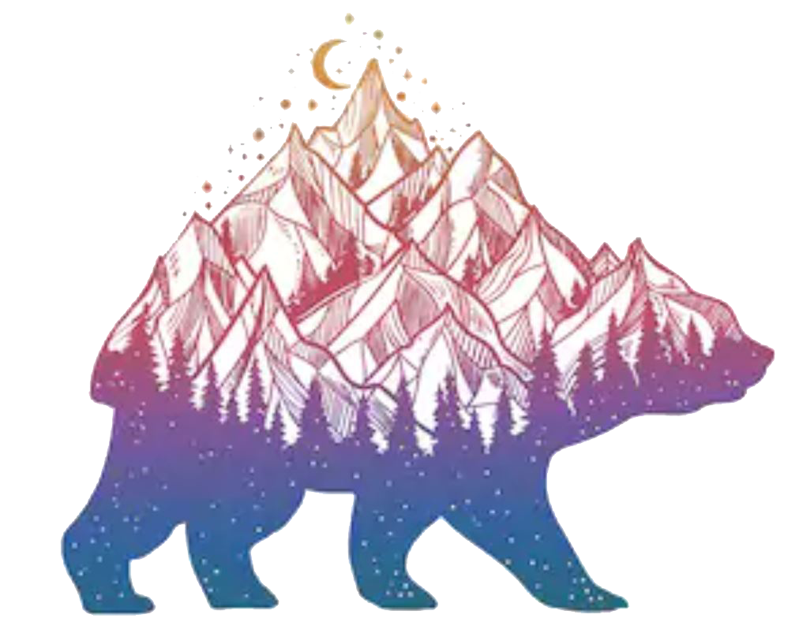

A web developer.
I am a budding web developer, photographer and Certified Veterinary Technician.
I love photography and enjoy the art of creating awesome images through my own perspective. I have taken photos of everything since I was young, always carrying around a camera. I am working on improving my skills in nature and wildlife photography.
I am a Certified Veterinary Technician and have been in veterinary medicine for 16 years, with 10 of those years being in specialty medicine. I am very knowledgable & have excellent skills in areas including emergency medicine, internal medicine, anesthesia, specialty dentistry, surgery, general practice and much more! With an ever growing field, I am eagerly hoping to extend my knowledge and skillset with wildlife and sancturies.
Ready for new ideas and creations?
Let's make something togethor and learn from eachother!